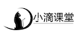

愿景："让编程不再难学，让技术与生活更加有趣"
更多课程请访问 xdclass.net
简介：零基础到实战课程简介
适合人群
前端工程师
全栈工程师
课程大纲速览
学后水平
深入理解 webpack5 配置文件的原理和使用
掌握常用的加载器 loader和插件 plugins 安装使用
灵活应用 webpack5 中的资源模块加载图片、字体资源
掌握在开发环境配置本地服务器实现热更新、接口跨域
利用代码压缩、分离和tree shaking，优化构建的性能
掌握区分不同环境、热更新和source map提高开发效率
学习形式


简介：Webpack初始
Webpack初始
版本历史
2012.3—webpack（问世）
2014.2—webpack1
2016.12—webpack2
2017.6—webpack3
2018.2—webpack4
2020.10—webpack5（要求node版本10.13+）
官网
定义
webpack 是一个用于现代 JavaScript 应用程序的静态模块打包工具
静态模块
打包
将各个模块，按照一定的规则组装起来
特点
构建（不支持的代码转换成支持的代码）
源代码编译成浏览器能解析的生产代码（如：es6=>es5，scss=>css）
格式化校验
压缩
打包
把多个文件合并成一个文件，减少http请求的次数，提高生产环境的运行效率
发布 web 服务
功能
简介：Webpack核心概念
入口（Entry）
告诉 webpack 应该使用哪个模块，来作为构建整个项目的开始
出口（Output）
告诉 webpack 在哪里输出它所创建的 bundle，以及如何命名这些文件（默认为 main.js ）
加载器（Loader）
webpack 只能理解 JS 和 JSON 文件，loader 让 webpack 能够去处理其他类型的文件，并将它们转换为有效模块，以供应用程序使用
例子：css-loader | html-loader
插件（Plugins）
插件是 webpack 的支柱功能，能够执行范围更广的任务，包括：打包优化、压缩、重新定义环境中的变量等
例子：html-webpack-plugin
模式（Mode）
区分环境，不同的环境打包逻辑不同
development（优化打包速度，提供调试的辅助功能）production（优化打包结果，打包之后代码的运行效率和性能优化）none（最原始的打包）
简介：上手webpack使用
初始化项目
cnpm init -y
安装
cnpm i webpack webpack-cli -D
创建入口文件
// ./src/index.jsconsole.log(hello webpack)
打包命令（指定mode）
webpack ./src/index.js -o ./dist --mode=development
愿景："让编程不再难学，让技术与生活更加有趣"
更多课程请访问 xdclass.net
简介：webpack配置文件
特点
简化命令行的选项
默认配置文件名称为webpack.config.js
操作webpack大部分都是在配置webpack.config.js文件
配置详情
mode（模式）
// 打包模式配置mode: 'development',entry（入口）
// 入口文件配置entry: './src/index.js',output（出口）
const { resolve } = require('path');
// 出口文件配置output: { // 所有输出文件的目标路径，必须是绝对路径 path: path.resolve(__dirname, 'dist'), // 出口文件名配置 filename: "bundle.js",},module（模块-loader配置）
// 模块配置module: { rules: [ // 配置多个模块规则（配置loader、解析器等选项） ],},devServer（用于快速开发应用程序）
xxxxxxxxxx// 开发服务器devServer: {},plugin（插件）
xxxxxxxxxx// 插件配置plugins: [],
打包命令设置
xxxxxxxxxx// package.json"scripts": { "build": "webpack",},
·
简介：详解打包自动生成HTML文件
自动生成HTML文件（html-webpack-plugin）
定义
安装
xxxxxxxxxxcnpm i html-webpack-plugin -D引入
xxxxxxxxxx// webpack.config.jsconst HtmlWebpackPlugin = require('html-webpack-plugin')配置
xxxxxxxxxx// webpack.config.jsplugins: [ new HtmlWebpackPlugin(),],
指定生成HTML模板
新建HTML文件
xxxxxxxxxx// ./src/index.html配置
xxxxxxxxxx// webpack.config.jsplugins: [ new HtmlWebpackPlugin({ template:'./src/index.html', //指定 html 模板 filename:'index.html', //指定 html 名称 title:'hello webpack' //指定 html title }),],title使用
xxxxxxxxxx// 使用EJS语法，是JS的模板引擎<title><%=htmlWebpackPlugin.options.title%></title>
简介：详解打包多个HTML页面
打包多个HTML页面
配置
xxxxxxxxxx// webpack.config.jsplugins: [ new HtmlWebpackPlugin({ template:'./src/index.html', filename:'index.html', title:'首页' }), new HtmlWebpackPlugin({ template:'./src/index.html', filename:'mine.html', title:'我的' }),],
跳转设置
xxxxxxxxxx// index.html<body> <div>小滴课堂</div> <a href="index.html">首页</a> <a href="mine.html">我的</a></body>
压缩
配置
xxxxxxxxxxnew HtmlWebpackPlugin({ template: './src/index.html', title: '我的', filename: 'mine.html', minify: { collapseWhitespace: true, // 清除空格换行 removeComments: true, // 清除注释 }, }),
简介：剖析CSS打包的原理
打包css的loader
css-loader
style-loader
将包含css内容的js代码，插入到html中style标签中
安装
xxxxxxxxxxcnpm i css-loader style-loader -D
css文件引入
xxxxxxxxxx// index,jsimport './css/main.css'
webpack配置文件中配置规则
xxxxxxxxxx// 模块配置module: { rules: [ // 配置多个模块规则（配置loader、解析器等选项） { // 匹配css文件 test: /\.css$/i, // 指定加载器，加载顺序是从左到右或者是从下到上 use: ['style-loader', 'css-loader'], }, ],},
简介：将CSS代码抽离成单独文件
mini-css-extract-plugin
安装
xxxxxxxxxxcnpm i mini-css-extract-plugin -D引入
xxxxxxxxxx// webpack.config.jsconst MiniCssExtractPlugin=require('mini-css-extract-plugin')
loader配置（替换style-loader）
xxxxxxxxxx// webpack.config.jsuse:[MiniCssExtractPlugin.loader,'css-loader']
实例化插件
xxxxxxxxxx// webpack.config.jsnew MiniCssExtractPlugin({ filename:'./css/main.css'})
作用
简介：剖析CSS预编译语言
css预编译语言的安装
less
xxxxxxxxxxcnpm install less less-loader -Dsass
xxxxxxxxxxcnpm install node-sass sass-loader -Dstylus
xxxxxxxxxxcnpm install stylus stylus-loader -D
使用
xxxxxxxxxx// index.jsimport './css/main.less'
webpack配置文件中配置规则
xxxxxxxxxx // 模块配置module: { rules: [ { test: /\.less$/i, use: ['style-loader', 'css-loader', 'less-loader'], }, ],},
简介：对特殊的CSS样式添加兼容前缀
安装
xxxxxxxxxxcnpm i postcss-loader autoprefixer -D配置
webpack.config.js
xxxxxxxxxxuse: [ MiniCssExtractPlugin.loader, 'css-loader', 'postcss-loader' // 处理css兼容]
postcss.config.js
xxxxxxxxxxmodule.exports = { plugins: [require('autoprefixer')], // 添加浏览器前缀};
package.json
xxxxxxxxxx"browserslist":[ "last 2 version", // 兼容浏览器的最近两个版本 "> 1%" // 全球占有率超过1%的浏览器]作用
简介：压缩CSS代码
optimize-css-assets-webpack-plugin
安装
xxxxxxxxxxcnpm i optimize-css-assets-webpack-plugin -D引入
xxxxxxxxxx// webpack.config.jsconst OptimizeCssAssetsPlugin = require('optimize-css-assets-webpack-plugin')配置
xxxxxxxxxx// webpack.config.jsplugins: [ new OptimizeCssAssetsPlugin(),],
作用
愿景："让编程不再难学，让技术与生活更加有趣"
更多课程请访问 xdclass.net
简介：详解编译
目的
安装
xxxxxxxxxxcnpm i babel-loader @babel/core @babel/preset-env core-js -D配置
xxxxxxxxxx{ test: /\.m?js$/, exclude: /node_modules/, use: { loader: 'babel-loader', options: { presets: [ ['@babel/preset-env', { useBuiltIns:'usage', //按需加载 corejs:3, //指定版本 targets: "defaults" } ] ] } }}
简介：详解代码格式校验
安装
xxxxxxxxxxcnpm i eslint eslint-config-airbnb-base eslint-webpack-plugin eslint-plugin-import -Deslint
eslint-config-airbnb-base
eslint-webpack-plugin
eslint-plugin-import
使用
xxxxxxxxxx// webpack.config.jsconst ESlintPlugin=require('eslint-webpack-plugin')
plugins:[ new ESlintPlugin({ fix:true // 自动修正不符合规范的代码 })]xxxxxxxxxx// package.json"eslintConfig":{ "extends":"airbnb-base"}
简介：详解资源模块Asset Modules
Asset Modules
定义
官方地址：https://webpack.docschina.org/guides/asset-modules/
在 webpack 4 版本，通常使用：
raw-loader将文件作为字符串输出
file-loader将文件发送到输出目录
url-loader设定一个临界值（文件大小），大于该值将文件发送到输出目录，否则将文件转为base64合并到 js 文件当中
在webpack5版本，可以使用Asset Modules 的 4 种新的模块类型来替换这些loader
asset/resource
file-loader.asset/inline
url-loader.asset/source
raw-loader.asset
url-loader资产大小限制来实现。
简介：详解图片和字体资源打包
图片资源打包
xxxxxxxxxx{ test: /\s/i, // asset可以在asset/inline和asset/resource之间进行切换，文件小于8kb时使用asset/inline，否则使用asset/resource type: 'asset', parser: { dataUrlCondition: { maxSize: 8 * 1024, }, }, generator: { filename: 'images/[name][ext]', },},
字体资源打包
xxxxxxxxxx{ test: /\.(eot|svg|ttf|woff|woff2)$/i, // asset可以在asset/inline和asset/resource之间进行切换，文件小于8kb时使用asset/inline，否则使用asset/resource type: 'asset', parser: { dataUrlCondition: { maxSize: 8 * 1024, }, }, generator: { filename: 'fonts/[name][ext]', },},
简介：详解开发服务器
热更新
安装
xxxxxxxxxxcnpm i webpack-dev-server -D配置
xxxxxxxxxxdevServer:{ // 告诉服务器从哪里提供内容 static: { directory: resolve(__dirname, 'output'), }, // 打开自动更新 liveReload: true, // 打开gzip压缩 compress: true, // 指定端口号 port: 8888,},// 指定构建的环境target: 'web',
配置接口代理（proxy）
目的
配置
xxxxxxxxxxproxy: { '/api': { // 访问的目标地址 target: 'https://api.xdclass.net', // 如果不希望传递/api，则需要重写路径 pathRewrite: { '^/api': '' }, // 访问https时需要配置 secure: false, }, // 覆盖源主机名 changeOrigin: true,},
愿景："让编程不再难学，让技术与生活更加有趣"
更多课程请访问 xdclass.net
简介：详解开发环境区分
目的
变量区分打包环境
配置
打包命令传参
生产环境打包命令设置
xxxxxxxxxx// package.json"scripts": { "build:prod": "webpack --env production"},开发环境
xxxxxxxxxxnpm run build生产环境
xxxxxxxxxxnpm run build:prod
简介：详解开发环境区分
配置文件区分打包环境
合并插件
webpack-merge
安装
xxxxxxxxxxcnpm i webpack-merge -D
开发环境配置文件
xxxxxxxxxx// webpack.dev.config.jsconst {merge} = require('webpack-merge')const baseWebpackConfig=require('./webpack.base.conf')const devWebpackConfig=merge(baseWebpackConfig,{ // 开发环境的配置})生产环境配置文件
xxxxxxxxxx// webpack.prod.config.jsconst {merge} = require('webpack-merge')const baseWebpackConfig=require('./webpack.base.conf')const prodWebpackConfig=merge(baseWebpackConfig,{ // 生产环境的配置})公共配置文件
修改打包命令
简介：环境区分不同的全局变量
DefinePlugin
不同环境注入不同的接口地址
开发环境配置
xxxxxxxxxx// webpack.dev.config.jsconst webpack = require('webpack')plugins:[ new webpack.DefinePlugin({ API_BASE_URL:JSON.stringify('https://apidev.xdclass.com') })]获取接口地址
xxxxxxxxxx// index.jsconsole.log('配置的接口：',API_BASE_URL)
简介：详解代码分离多入口打包
目的
bundle 文件分离方式
多入口打包
抽离出公共文件
xxxxxxxxxxoptimization.splitChunks.chunks:all动态导入
多入口打包
入口 entry 配置多个文件
配置
xxxxxxxxxx// webpack.config.jsentry: { index: './src/index.js', mine: './src/mine.js',}, output: { filename: '[name].bundle.js',}, HtmlWebpackPlugin({ chunks:['index']})HtmlWebpackPlugin({ chunks:['mine']})
简介：详解代码分离抽离出公共文件
目的
配置
xxxxxxxxxxoptimization: { splitChunks: { chunks: 'all', },},可视化工具
安装
xxxxxxxxxxcnpm install webpack-bundle-analyzer -D配置
xxxxxxxxxx// webpack.config.jsconst BundleAnalyzerPlugin = require('webpack-bundle-analyzer').BundleAnalyzerPlugin;
module.exports = { plugins: [new BundleAnalyzerPlugin()]}图示
简介：详解代码分离动态导入
按需加载（懒加载）
默认不加载，只有页面展示或者事件触发后才加载
指定打包后的文件名称
xxxxxxxxxxwebpackChunkName:'xxx'
预加载
先等待其他资源加载完成之后再加载
指定需要预加载的内容
xxxxxxxxxxwebpackPrefetchz:true
愿景："让编程不再难学，让技术与生活更加有趣"
更多课程请访问 xdclass.net
简介：掌握代码映射Source Map定位问题
Source Map
定义
目的
配置
xxxxxxxxxxdevtool:"source-map"推荐配置
xxxxxxxxxxdevtool:"eval-cheap-module-source-map"eval 具有最好的性能，但并不能帮助你转译代码。cheap 配置的map 质量会稍微差一点（保留行报错，没有列报错），但是不影响问题定位，还可以提高性能module 包含第三方模块的报错
简介：深入理解Tree Shaking
Tree Shaking（摇树）
描述移除 JavaScript 上下文中的未引用代码
注意
与Source Map有兼容问题
devtool 只能设置以下四种
xxxxxxxxxxdevtool:source-map | inline-source-map | hidden-source-map | nosources-source-mapeval 模式是将 js 输出为字符串不是 ES Modules规范，导致Tree Shaking失效
使用
生产模式
自动开启
开发模式
usedExports
xxxxxxxxxxconst TerserPlugin=require('terser-webpack-plugin')optimization:{ // 标记未使用的代码 usedExports:true, // 删除已经标记未使用的代码 minimize:true, minimizer:[new TerserPlugin()]}sideEffects
简介：深入理解Tree Shaking
副作用
引入一个模块，调用了模块中的函数，或者修改当前模块、全局的数据，就有副作用
修改全局的变量
在原型上扩展方法
css的引入
开启副作用
xxxxxxxxxxoptimization:{ // 开启副作用标识 sideEffects:true,}
标识代码是否有副作用
xxxxxxxxxx// package.json"sideEffects":false (告诉webpack所有代码都没有副作用)"sideEffects":true (告诉webpack所有代码都有副作用)"sideEffects":['xxx.js','*.less']（告诉webpack哪些有副作用，不移除）
简介：剖析webpack中的缓存
babel缓存
特点
配置
xxxxxxxxxxuse:[ options:{ cacheDirectory:true }]
文件资源缓存
配置webpack哈希值
简介：剖析webpack中的模块解析
模块解析
配置
xxxxxxxxxx// webpack.config.jsresolve:{ alias:{ // 指定路径的别名 '@':resolve('src') }, // 自动解析模块的后缀名 extensions: ['.js', '.json', '.less'],}
排除依赖打包
配置
xxxxxxxxxx// webpack.config.jsexternals:{ 'jquery':'jQuery'}xxxxxxxxxx// index.<script src="https://cdn.bootcdn.net/ajax/libs/jquery/3.6.0/jquery.min.js"></script>